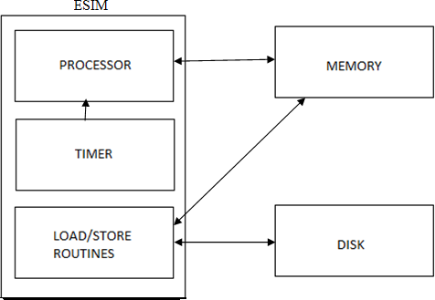

Introduction
A detailed operating system specification was done in the work of [KAG+11]. This documentation was critically reviewed and modifications were done in many places to comply with our new design. The major modifications done are the following:
- Addition of 8 Kernel registers and 4 Temporary registers.
- The ready queue data structure in the previous design was replaced with a ready list data structure for simplicity in design and implementation.
- The maximum number of processes supported by the Operating System was reduced to 12 from 16 due to space constraints in memory.
- Interrupt specifications were modified due to the size constratits of interrupt code.
- The memory layout was modified to incorporate the new design decisions.
Brief Machine Description
The machine simulator is known as Extended Simple Integer Machine (ESIM). It is an interrupt driven uniprocessor machine.

The various components of the machine are :
- Disk It is a non-volatile storage that stores user programs (executables) and data files.
- Memory It is a volatile storage that stores the programs to be run on the machine as well as the operating system that manages the various programs.
- Processor It is the main computational unit that is used to execute the instructions.
- Timer It is a device that interrupts the processor after a pre-defined specific time interval.
- Load/Store It is a macro that performs the functionalities of DMA controller
Data types
The fundamental types supported by the machine are integer and string. A string is a sequence of characters terminated by '\0'. The machine interprets a single character also as a string.
The character 's' is stored as "s\0" in the memory and the word "ESIM" is stored as "ESIM\0" in the memory.
ESIM supports a maximum string length of 16.